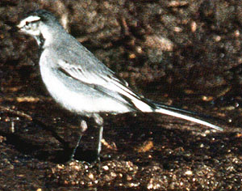
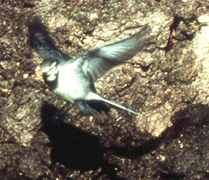

| These photographs accompany records that have been recently submitted to the committee. This record
has been ACCEPTED.  White/Black-backed Wagtail Motacilla alba/lugens 22 Dec 90, Moonglow Dairy, Moss Landing, MTY 1990-200 © 1990 Don Roberson Back to CBRC Rare Bird Photos |
|  White/Black-backed Wagtail Motacilla alba/lugens 22 Dec 90, Moonglow Dairy, Moss Landing, MTY 1990-200 © 1990 Don Roberson Back to CBRC Rare Bird Photos |